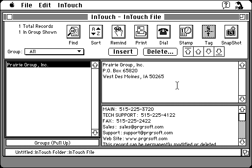

Download (external link)
intouchdemodisk.smi.hqx (1.9M) InTouch 2.5 Demo - OS 9 and earlier
copyright: Prairie Group, Inc.
mod date: July 20, 1995
license: free demo for commercial product
from url :
InTouch 2.5.3
Address Book. “a free-form information manager. Instead of separate fields for each piece of information, InTouch uses just two data entry fields.” A “30 day full working demo” for “System 7 thru OS 9”.
Self mounting image such as this one do not seem to work on a Macintosh Plus with American system software, but strangely they do seem to work with British system software. See the British System 7.0.1 utility disk Recipe for Mini vMac.

Here is the md5 checksum for the download:
--------- GRY SIGNED TEXT --------- 363ff1afc99b58bd55ba5c6a995eb9a4 intouchdemodisk.smi.hqx ------- BEGIN GRY SIGNATURE ------- Gry/4Xa8CFcUzxdN/HVkjr+jL2vmf4TyL0aKbGDXzQ+rAWZ97PkFbAEv3RCuDO/s rjpyulgcTIcZoWU4iEFqN32cQIfdBLq+FGLAqYC6HcRxq2uXyi4FZZqqnaHfwYGw b7goeqOnxY7tDx+usJ3MWCW1qg66puw2exhMJ7hXvvMAcxpCPgW6aR4urjPECXUq -------- END GRY SIGNATURE --------